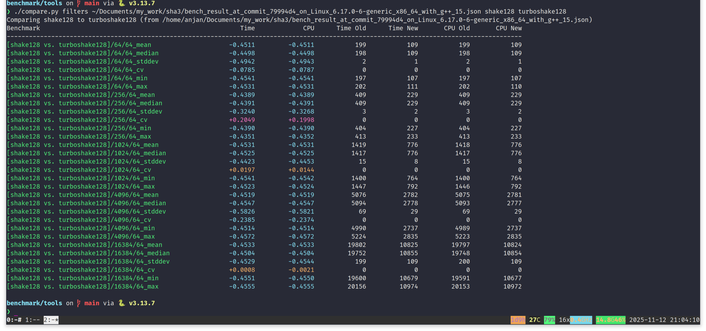
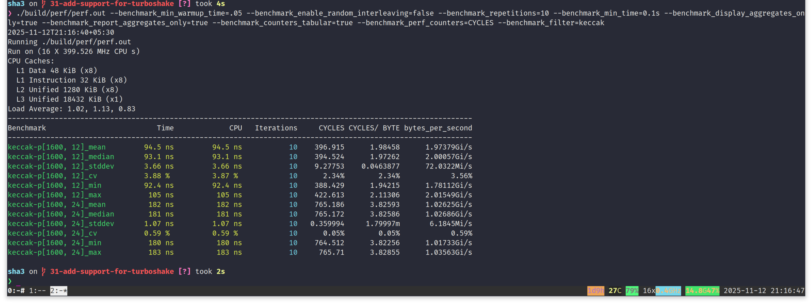
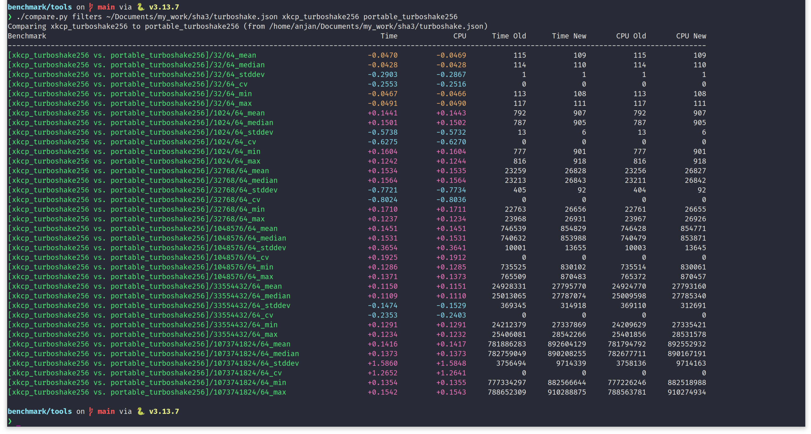
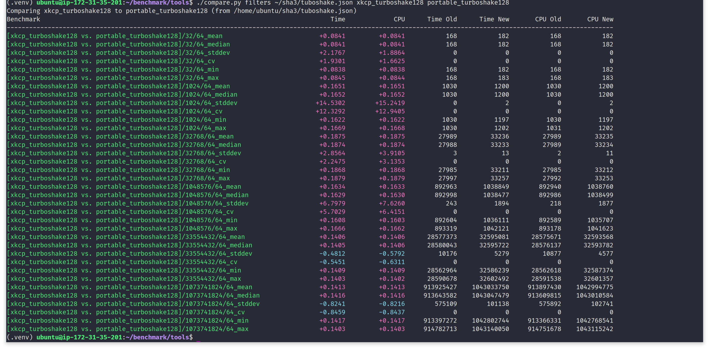
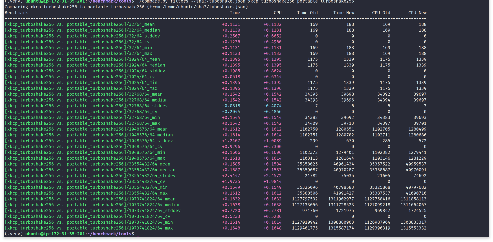

NIST's SHA3 standard FIPS 202, which defines four hash functions and two eXtendable Output Functions (XOFs), based on 24-rounds keccak-p[1600] permutation, offers an excellent security margin. Keccak permutation and sponge mode of operation has been extensively studied for more than a decade now. And the cryptanalysis community largely agrees that using 24-rounds keccak permutation is an overkill. SHA3 is known for being relatively slow in software, though it is performant in hardware. And 24-rounds keccak permutation eats a large pie from SHA3's software performance. To make keccak permutation based hashing faster in software, keccak team has written up RFC 9861, which proposes two families of XOFs - TurboSHAKE and KangarooTwelve. TurboSHAKE is simply SHAKE (from FIPS 202), just powered by 12-rounds keccak-p[1600] permutation. While KangarooTwelve builds a tree hashing mode on top of TurboSHAKE for much faster SIMD and/or multi-threaded parallel hashing. KangarooTwelve shines on modern multi-core, multi-CPU machines, where each CPU features several SIMD registers, offering GB/s of throughput. In this writing, we will just focus on TurboSHAKE - which is a good fit for replacing SHAKE XOF.
In SHA3 standard FIPS 202, two XOFs are defined - SHAKE128 and SHAKE256. SHAKE behaves like a flexible hash function. Usually a cryptographic hash function produces a fixed length message digest. For example, SHA3-256, is a hash function defined in FIPS 202, which produces a 32-bytes message digest for any arbitrary length input it consumes. While SHAKE128, can absorb an arbitrary length message, just like a hash function, though on the other side, it can produce an arbitrary length output i.e. message digest. An extendable output function (XOF) behaves like a sponge - it can absorb arbitrary long message, then it can be squeezed to produce as long output is required. The flexibility that SHAKE offers, makes it a really good fit for producing a long pseudo-random stream of bytes. All the post-quantum cryptographic schemes, be that key encapsulation mechanism (KEM) or digital signature algorithm (DSA), use a XOF to expand a fixed seed to a matrix or vector. A XOF can be seeded with entropy sampled from non-deterministic sources to build a cryptographically secure psuedo-random number generator (CSPRNG), coupled with occasional ratcheting. A XOF can be used as the basis for key derivation function, so that keying material can be extended to produce longer key material, to be used with other protocols. But SHAKE is slow in software. Hence we have TurboSHAKE - which simply doubles throughput of keccak permutation-based extendable-output hashing, by halving the number of keccak permutation rounds to 12.
In rest of the writing, we will focus on sha3 - a fully constexpr, portable, C++ header-only library implementation of SHA3 suite of hash functions. The library is available @ https://github.com/itzmeanjan/sha3. Being a header-only library, it's very easy to get started with. XKCP is the state-of-the-art C library implementation of everything keccak permutation based. It's available @ https://github.com/XKCP/XKCP. On the other hand, sha3 is not optimized for any specific platform, it is portable and uses modern C++ language and standard library features to offer an easy-to-drive feel. One competitive advantage sha3 has over XKCP is, it's fully constexpr - meaning, given the input message is known at program compile-time, it should be possible to compute message digest (MD) using any of the SHA3 algorithms, in program compile-time itself.
#include "sha3/sha3_256.hpp"
#include <array>
#include <cstdint>
#include <cstdlib>
#include <string_view>
template<size_t L>
constexpr std::array<uint8_t, L>
string_to_bytes(std::string_view sv)
{
std::array<uint8_t, L> arr{};
for (size_t i = 0; i < sv.size(); i++) {
arr[i] = static_cast<uint8_t>(sv[i]);
}
return arr;
}
constexpr std::string_view MSG = "keccak permutation rocks!";
constexpr auto MSG_bytes = string_to_bytes<MSG.size()>(MSG);
constexpr auto MD = sha3_256::sha3_256_t::hash(MSG_bytes);
int
main()
{
// 4edc60a9ffe739ce44252716483a529e8a859a5a75cbf69d494037e914bac16b
constexpr std::array<uint8_t, sha3_256::DIGEST_LEN> expected_md = { 78, 220, 96, 169, 255, 231, 57, 206, 68, 37, 39, 22, 72, 58, 82, 158,
138, 133, 154, 90, 117, 203, 246, 157, 73, 64, 55, 233, 20, 186, 193, 107 };
static_assert(MD == expected_md, "Must compute SHA3-256 message digest in program compile-time!");
return EXIT_SUCCESS;
}
In above code snippet, notice the input message to be hashed is known at program compile-time "keccak permutation rocks!". We can use sha3 header-only C++ library to compute message digest of this string at program compile-time and embed the MD as a constant in program. Each of the SHA3 functions are implemented as constexpr function. It's a modern C++ language feature. It allows some functions to be executed by the compiler, to pre-compute the result or sub-result, given that the input is known at compile-time. It is a really useful feature because one can run a static_assert(...) against the compiler computed value to enforce free correctness check. Just to show that the compile-time computed SHA3-256 digest, in above code snippet, is correct, we present following Python REPL output.
> python
Python 3.13.7 (main, Aug 20 2025, 22:17:40) [GCC 15.2.0] on linux
Type "help", "copyright", "credits" or "license" for more information.
>>> import hashlib
>>> hashlib.sha3_256(b'keccak permutation rocks!').digest().hex()
'4edc60a9ffe739ce44252716483a529e8a859a5a75cbf69d494037e914bac16b'
>>>
Let's jump back to TurboSHAKE. In a recent pull request https://github.com/itzmeanjan/sha3/pull/32, we have added support for hashing with TurboSHAKE in sha3 - our small footprint, portable, C++20 header-only library implementation of SHA3 suite. And more importantly, all TurboSHAKE functions are also constexpr - meaning, you can compile-time evaluate arbitrary long TurboSHAKE128 or TurboSHAKE256 output, for any compile-time known message. Following code snippet demonstrates how to use TurboSHAKE128 API.
// File name: turboshake128.cpp
#include <iostream>
#include <numeric>
#include <vector>
#include <cstdint>
#include <iomanip>
#include <span>
#include <sstream>
#include "sha3/turboshake128.hpp"
// Given a bytearray of length N, this function converts it to hex string of length N/2 | N >= 0.
static inline std::string
to_hex(std::span<const uint8_t> bytes)
{
std::stringstream ss;
ss << std::hex;
for (size_t i = 0; i < bytes.size(); i++) {
ss << std::setw(2) << std::setfill('0') << static_cast(bytes[i]);
}
return ss.str();
}
// Compile it using
//
// g++ -std=c++20 -Wall -O3 -march=native -I include turboshake128.cpp
int
main()
{
constexpr size_t msg_len = 32;
constexpr size_t out_len = 40;
std::vector<uint8_t> msg(msg_len, 0);
std::iota(msg.begin(), msg.end(), 0);
std::vector<uint8_t> out(out_len, 0);
auto out_span = std::span(out);
// Create TurboSHAKE128 hasher.
turboshake128::turboshake128_t hasher;
// Absorb message bytes into sponge state.
//
// Instead of absorbing the whole message in a single shot, one could have
// absorbed it by invoking `absorb()` as many times required, before finalizing it.
hasher.absorb(msg);
// Finalize sponge state
hasher.finalize();
// Squeeze total `out_len` -bytes out of sponge, a single byte at a time.
// One can request arbitrary many bytes of output, by calling `squeeze` arbitrary
// many times, after it has been finalized.
//
// Or we could have just squeezed all `out_len` -bytes in a single go.
for (size_t i = 0; i < out_len; i++) {
hasher.squeeze(out_span.subspan(i, 1));
}
std::cout << "TurboSHAKE128" << std::endl << std::endl;
std::cout << "Message : " << to_hex(msg) << "\n";
std::cout << "Output : " << to_hex(out) << "\n";
return EXIT_SUCCESS;
}
Time to run a benchmark comparison, to see how fast TurboSHAKE128 is compared to SHAKE128, on a x86_64 machine of Intel Alderlake architecture, running Linux kernel 6.17.0-6-generic. We compiled the benchmark executable with GCC 15.2.0, while turning on full optimization by passing -O3 -march=native -flto. Following benchmark comparison clearly shows, TurboSHAKE128 has ~45% lesser latency compared to SHAKE128, for all input sizes. This matches our expectation. Both SHAKE128 and TurboSHAKE128 have exact same sponge parameters i.e. same rate and capacity. Just the difference is in which permutation is used. In TurboSHAKE128, we are using faster 12-rounds keccak-p[1600, 12] permutation, compared to full round keccak-p[1600, 24] permutation in SHAKE128.
On the same machine, with similar compilation configuration, we see 12-rounds keccak-p[1600, 12] permutation taking ~93ns, compared to ~181ns for 24-rounds keccak-p[1600, 24] permutation. That's a ~48% drop in latency for keccak permutation. And it's powering our TurboSHAKE performance gain.

TurboSHAKE's choice of using 12-rounds keccak permutation for faster hashing still provides us with sufficient cryptographic security margin.
And given the performance gain that comes from switching to TurboSHAKE from SHAKE is a strong indicator to adopt TurboSHAKE and enjoy the cake.
Before finishing off, we want to run a performance comparison between TurboSHAKE implementation in sha3 vs.
XKCP's optimized TurboSHAKE implementation in C. In the following section, we will refer to sha3's C++ header-only
library implementation of TurboSHAKE as portable-turboshake - for sake of brevity. We use google-benchmark
library as our choice of benchmark harness. Google-benchmark is a feature-rich C++ library for micro-benchmarking, available @ https://github.com/google/benchmark/tree/v1.9.4.
When running the benchmark comparison, we pinned portable-turboshake to git commit 2fa340596daf72e116cb0124ca55f068ce857bb5.
While XKCP was pinned to git commit e7a08f7baa3d43d64f5c21e641cb18fe292f2b75. For easy benchmark comparison, we use compare.py tool from
google-benchmark with JSON dump from benchmark execution. More documentation on this really useful tool @ https://github.com/google/benchmark/blob/v1.9.4/docs/tools.md.
Without any further adieu, let's benchmark compare on a x86_64 desktop machine, running Linux kernel 6.17.0-6-generic. We will consider xkcp-turboshake
as the baseline. We hash variable sized messages from 32B to 1GB, separated by a multiplicative factor of 32. We fix the squeezed output byte length to 64. While hashing this wide spectrum of input, we notice
portable-turboshake consistently takes ~10-15% more time.

This behaviour of portable-turboshake being 10-15% slower compared to the state-of-the-art xkcp-turboshake is also consistent in case of TurboSHAKE256.
For aarch64, we choose to use server-grade CPU on AWS EC2 c8g.large, featuring Graviton4 CPU, running Linux kernel 6.14.0-1015-aws. The benchmark executable is compiled with GCC 13.3.0, while turning on all optimizations, by passing -O3 -march=native -flto. We run the performance comparison using xkcp-turboshake as baseline, while portable-turboshake is the contender. Similar trend is clearly noticable, in following screen-captures, on aarch64 target. Both TurboSHAKE128 and TurboSHAKE256 from portable-turboshake is taking ~8-16% more time compared to the baseline.
 We conclude that switching to TurboSHAKE for faster extendable output hashing is worth it. Enjoy almost double the throughput of SHAKE XOF. While staying well within the security margin of very much publicly scrutinized keccak-p[1600] permutation and sponge mode of operation. This is a clear indication that we should adopt TurboSHAKE more. To choose which library to use for fast hashing with TurboSHAKE, we can't recommend XKCP enough. If performance for a wide range of targets is what you seek, XKCP is the best choice for anything keccak permutation based. It's maintained by the keccak team itself. But if you are looking for a low footprint, portable, header-only, C++ library which makes use of modern C++ features such that constexpr i.e. compile-time evaluable hash functions, concepts i.e. compile-time constraint enforcement using keccak sponge parameters and std::span instead of traditional raw pointer + size-based interface, you are welcome to look into sha3 @ https://github.com/itzmeanjan/sha3. It's only 1096 lines of code (LOC), implementing full NIST SHA3 standard FIPS 202, with two additional XOFs from RFC 9861 i.e. TurboSHAKE128 and TurboSHAKE256. Now that we have TurboSHAKE ready to use, it's good time to experiment - replace SHAKE with TurboSHAKE in NIST post-quantum cryptography standards. We explored a similar path with BLAKE3 and saw a performance boost of roughly 20% in ML-KEM and ML-DSA, using BLAKE3 for faster hashing instead of SHA3. It will be nice to see how close to that we can reach with TurboSHAKE. Because sticking to keccak-p[1600] permutation + sponge mode of operation for faster hashing, is no doubt more reassuring than using something completely different.